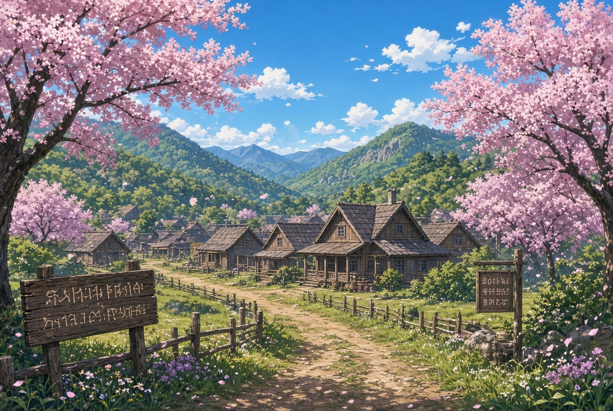
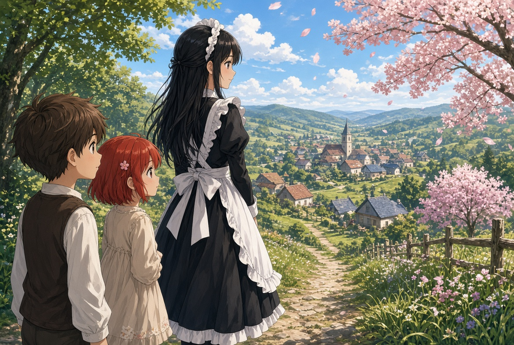
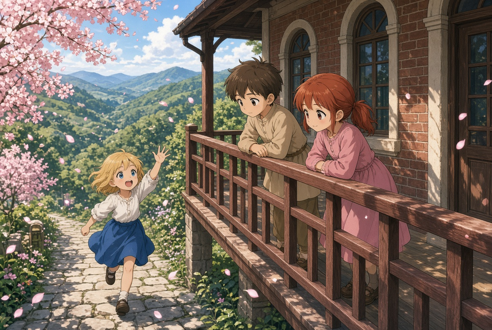
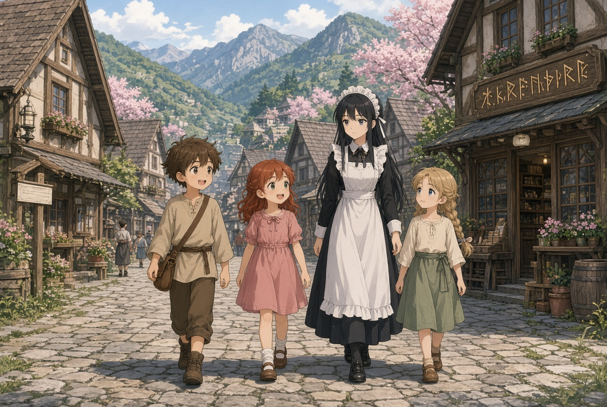

各話紹介 1話～15話

村" class="hero-village">第1話 マハムのスキル、スローライフ
5歳の鑑定の儀で「スローライフ」を引き、ハズレスキルとされたマハム。妹ミリアも「裁縫」を引き、両親に失望される。父の命令で辺境カーマイン村へ領主代行として左遷され、メイドのシータと三人で馬車の旅に出る。村の看板を通過した瞬間、鑑定・アイテムボックスなどの派生スキルが活性化する。
第2話 村長の娘、ターリャ
村に到着し、領主館で初めての夜を過ごす。翌朝、村長の娘ターリャが元気に出迎え、かけっこで案内してくれる。夕方には村の歓迎会が開かれ、ワイルドディアの鍋や蜂蜜ジュースで賑やかな宴を楽しむ。
第3話 庭と手入れとシータの事情
領主館の掃除と庭の手入れを始める。ターリャが手伝いに来て一緒に雑草を抜く。シータが左遷についてきた理由を知り、社交界を避けてメイドを選んだ過去を察する。庭仕事を通じて村の生活が少しずつ始まっていく。
第4話 リリーおばば、薬師と錬金術
村人たちが庭の手入れを手伝いに来る。ポーションを買いにリリーおばばの店へ行くと、ハイエルフだと判明。薬草の知識を褒められ、薬師の指導を受けることになる。ミリアは裁縫の練習を続ける。

到着" class="mid-image">第5話 草原探索、スライム魔核
ターリャと一緒に村の横の草原へスライム狩りに出る。グリーンスライムを倒して魔核を採取し、お小遣い稼ぎをする。アイテムボックスの便利さを実感しながら、初めての収入を得る。
第6話 冒険者ギルド、トールとソラエナ
スライムの魔核を冒険者ギルドで売る。受付の猫獣人ラーミアと出会い、休憩スペースでガキ大将トールとソラエナと初めて顔を合わせる。その後教会で初めての収入を神に捧げる。
第7話 リリーおばばと経済圏
リリーおばばの店を再び訪れる。村が高級ポーションを作ることで現金収入を得、村民が豊かである仕組みを知る。ターリャから村の経済について教えてもらい、ただの寒村ではないことを理解する。
第8話 兄上からの手紙
カイン兄上から速達便で手紙が届く。村での生活を心配しつつ、侯爵家の困窮やパーティーの苦労が書かれている。マハムたちは返事とミリアの絵日記を準備する。トールから「何もしないのがいい」と励まされる。

第9話 ブラックスネークの恐怖
草原でスライム狩り中にブラックスネークと遭遇。毒はないと知りつつも、ネズミを丸飲みする姿にミリアとターリャが怖がる。ギルドで報告し、ラーミアから高級革になることを教えられる。
第10話 ミリアの裁縫
ミリアが魔法陣の刺繍で護符を作る。完成した護符をトールやソラエナに渡し、教会で安全祈願をしてもらう。ミリアの裁縫スキルが実用的であることを改めて実感する。
第11話 閑話：マハムの女神様
明晰夢の中で女神トカリアーナ様と出会う。転生の理由を聞かれ、「ただ生活すればよい」と告げられる。お布施やおやつをねだられ、満月の夜に目が覚める。
第12話 お花見会
春の恒例行事・お花見会が開かれる。ワイルドボアのスープや串焼き、蜂蜜ジュースで村中が盛り上がる。ターリャがエール配りを手伝い、サクラの花びらが舞う中で宴会を楽しむ。

村の日常" class="mid-image">第13話 トールの後悔とソラエナの理解
トールがソラエナを怒らせてしまい、仲直りのために白い花を探す。マハムとミリアが手伝い、花束を渡して無事仲直りする。幼馴染カップルの様子を温かく見守る。
第14話 シータの才能
シータが氷魔法でアイスクリームを作ってくれる。男爵令嬢として氷魔法を持ちながら、社交界を避けてメイドになった経緯を知る。戦闘能力もあることを察する。
第15話 ベーコンの尽きた日
王都から持ってきたベーコンが尽き、ミリアと一緒に村の肉屋へ行く。ワイルドウルフの肉を買い、シータに調理してもらう。村での自給自足的な生活に一歩近づく。
... それから
掲載期間中は、毎日連載を続けます。お楽しみに。
→ カクヨム(準備中)